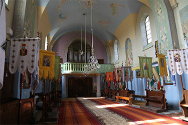
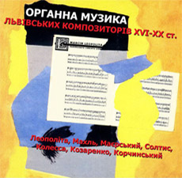
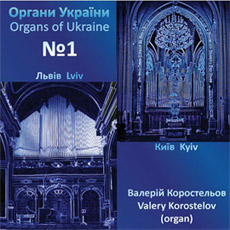
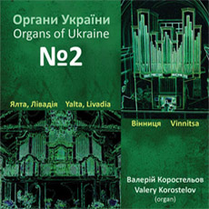

<!doctype html>
<html lang="en">
  <head>
    <title>Hello, world!</title>
    <!-- Required meta tags -->
    <meta charset="utf-8">
    <meta name="viewport" content="width=device-width, initial-scale=1, shrink-to-fit=no">
    <link rel="stylesheet" href="main.css">
    <!-- Bootstrap CSS -->
    <link rel="stylesheet" href="https://maxcdn.bootstrapcdn.com/bootstrap/4.0.0-beta.2/css/bootstrap.min.css" integrity="sha384-PsH8R72JQ3SOdhVi3uxftmaW6Vc51MKb0q5P2rRUpPvrszuE4W1povHYgTpBfshb" crossorigin="anonymous">
  </head>
  <body>
    <div class="container">
      <nav class="navbar navbar-expand-lg navbar-light  mx-3 px-3">
        <a class="navbar-brand pt-auto pb-0" href="#"></a>
        <button class="navbar-toggler" type="button" data-toggle="collapse" data-target="#navbarText" aria-controls="navbarText" aria-expanded="false" aria-label="Toggle navigation">
          <span class="navbar-toggler-icon"></span>
        </button>
        <div class="collapse navbar-collapse mt-auto" id="navbarText">
          <ul class="navbar-nav mx-auto">
            <li class="nav-item mx-3">
              <a class="nav-link" href="index.html">Органи</a>
            </li>
            <li class="nav-item mx-3 dropdown active">
              <a class="nav-link dropdown-toggle" data-toggle="dropdown" href="#"
                role="button" aria-haspopup="true" aria-expanded="false">Органісти та майстри<span class="sr-only">(current)</span>
              </a>
              <div class="dropdown-menu" aria-labelledby="Органісти та майстри">
                <a class="dropdown-item" href="#">Публікації</a>
                <a class="dropdown-item" href="index_organists.html">Органісти</a>
              </div> 
            </li>
            <li class="nav-item mx-3 dropdown">
              <a class="nav-link dropdown-toggle" data-toggle="dropdown" href="#"
                role="button" aria-haspopup="true" aria-expanded="false">Твори
              </a>
              <div class="dropdown-menu" aria-labelledby="Твори">
                <a class="dropdown-item" href="#">Публікації</a>
                <a class="dropdown-item" href="index_compositions.html">Твори</a>
              </div>  
            </li>
            <li class="nav-item mx-3 dropdown">
              <a class="nav-link dropdown-toggle" data-toggle="dropdown" href="#" 
                role="button" aria-haspopup="true" aria-expanded="false">Асоціація
              </a>
              <div class="dropdown-menu" aria-labelledby="Асоціація">
                <a class="dropdown-item" href="#">Історія сайту</a>
                <a class="dropdown-item" href="#">Проекти</a>
                <a class="dropdown-item" href="#">Новини</a>
                <a class="dropdown-item" href="#">Публікації</a>
                <a class="dropdown-item" href="#">Desktop</a>
             </div>  
            </li>
            <li class="nav-item mx-3">
              <a class="nav-link" href="#">Бутик</a>
            </li>
          </ul>
          <span class="navbar-text">
            <a href="#">uk</a>
            <a href="#">en</a>
          </span>
        </div>
      </nav>
    </div>
    <!--image-->
    <div class="main_foto">
      <div class="mt-5 pt-5">
        <div class="container">
          <h2 class="mx-3 px-3 pt-2 text_image">Інтернет-проект<br>Орга́ни України</h2>
        </div>  
      </div>
    </div>
    <!--middle-->
    <div class="container">
      <div class="row m-3 p-3">
        <div class="col-md-10 mx-auto">
          <h2 class="organy_alphabet">
            <a href="index_organs_regions.html" id="main-color">Органи за регіонами</a>
          </h2>
        </div>
      </div>
      <div class="flex-row mx-3 d-flex justify-content-center">
        <div class="col-md-10">
            
        </div>
      </div>
      <div class="row mx-3 px-3">
        <div class="col-md-10 mx-auto">
          <a href="index_organs_alphabet.html" id="main-color">Органи за абеткою</a>
        </div>
      </div>
      <div class="row mx-3 px-3 mt-5">
        <div class="col-md-10 ml-auto">
          <a href="#" id="main-color">Переглянути всі новини</a>
        </div>
      </div>
      <div class="m-3 flex-row d-flex justify-content-center">
        <h1 class="display-4" id="main-color">Актуальна новина</h1>
      </div>
      <div class="row m-3 p-3 text-center">
        <div class="col-md-6 row mx-auto">
          <div class="col-md-2 pl-0 pr-2">
            <h1 class="display-4 pr-0" id="main-color">02</h1>
            <p class="pr-0" id="main-color"> листопада</p>
          </div>
          <div class="col-md-8">
            
          </div>
        </div>
      </div>
      <div class="m-3 flex-row d-flex justify-content-center">
        <div class="d-flex flex-column col-6">
          <h4 id="main-color">У Ворзелі в храмі святого Іоана Павла ІІ відкрито орган</h4>
          <p>Концерт органної музики в костелі Вищої духовної семінарії Пресвятого серця Ісуса. Каміль Сен-Санс. Виконують: орган - Світлана Острова, скрипка - Христина Федик, вокал - Тетяна Стефанишин. Ворзель, 8 жовтня 2016 року.Завдяки винятковим природно-кліматичним умовам Ворзель набув широкої популярності насамперед як оздоровча місцевість. Цьому значною мірою сприяли спостереження за позитивними результатами лікування осіб із захворюваннями серця та нервової системи, що їх провели академіки М. Д. Стражеско, Б. М. Маньковський та професор Ф. Г. Яновський. Вони називали Ворзель українським Кисловодськом.
          </p>
        </div>
      </div>
      <div class="m-3 p-3 row">
        <p class="col-5 ml-auto">читати повністтю </p>
      </div>
      <div class="row m-3 text-center">
        <div class="col">
          <h1 class="display-4" id="main-color">Органна музика на CD</h1>
        </div>
      </div>
      <div class="row mx-3 p-3">
        <div class="col-sm col-md-3">
          <div class="d-flex flex-column">
            <div>
              
            </div>
            <div>
              <p>Органна музика Львівських
композиторів XVI-XX ст. -
компакт диск</p>
            </div>
            <div class="d-flex justify-content-center mt-5">
              <p>70 грн</p>
            </div>
            <button type="button" class="btn btn-outline-secondary">Купити</button>
          </div>
        </div>
        <div class="col-sm col-md-3">
          <div class="d-flex flex-column">
            <div>
              
            </div>
            <div>
              <p>Арсеній Котляревський,
серія видатні органісти -
компакт диск  </p>
            </div>
            <div class="d-flex justify-content-center mt-5">
              <p>80 грн</p>
            </div>
            <button type="button" class="btn btn-outline-secondary">Купити</button>
          </div>
        </div>
        <div class="col-sm col-md-3">
          <div class="d-flex flex-column">
            <div>
              
            </div>
            <div>
              <p>Органи України диск 1. Львів Валерій Коростельов - компакт диck</p>
            </div>
            <div class="d-flex justify-content-center mt-5">
              <p>85 грн</p>
            </div>
            <button type="button" class="btn btn-outline-secondary">Купити</button>
          </div>
        </div>
        <div class="col-sm col-md-3">
          <div class="d-flex flex-column">
            <div>
              
            </div>
            <div>
              <p>Органи України диск 2. Ялта, 
Лівадія, Вінниця. Валерій
Коростельов - компакт диск
              </p>
            </div>
            <div class="d-flex justify-content-center mt-3">
              <p>85 грн</p>
            </div>
            <button type="button" class="btn btn-outline-secondary">Купити</button>
          </div>
        </div>
      </div>
      <!--footer-->
      <div class="row  footer mx-3 px-3 my-5 ">
        <div class="col-12 col-md-8 p-0 d-flex flex-column">
          <p class="footer_column_1">© Сергій Каліберда, 2002-2016</p>
          <p class="footer_column_1">© Благодійна асоціація друзів органної музики і мистецтв, 2002-2016</p>
          <p class="footer_column_1">e-mail: organy@organy.lviv.ua</p>
        </div>
        <div class="col-12 col-md-4 p-0 d-flex align-items-end ml-auto">
          <p class="footer_logo d-flex justify-content-end ml-auto text-right footer_column_2">Створено в ІТ майстерні<br>
  Єгора Каліберди</p>
          <p class="ml-auto mt-4 ml-4 mb-4">
            
          </p>
        </div>
      </div>
  </div>
    <!-- Optional JavaScript -->
    <!-- jQuery first, then Popper.js, then Bootstrap JS -->
    <script src="https://code.jquery.com/jquery-3.2.1.slim.min.js" integrity="sha384-KJ3o2DKtIkvYIK3UENzmM7KCkRr/rE9/Qpg6aAZGJwFDMVNA/GpGFF93hXpG5KkN" crossorigin="anonymous"></script>
    <script src="https://cdnjs.cloudflare.com/ajax/libs/popper.js/1.12.3/umd/popper.min.js" integrity="sha384-vFJXuSJphROIrBnz7yo7oB41mKfc8JzQZiCq4NCceLEaO4IHwicKwpJf9c9IpFgh" crossorigin="anonymous"></script>
    <script src="https://maxcdn.bootstrapcdn.com/bootstrap/4.0.0-beta.2/js/bootstrap.min.js" integrity="sha384-alpBpkh1PFOepccYVYDB4do5UnbKysX5WZXm3XxPqe5iKTfUKjNkCk9SaVuEZflJ" crossorigin="anonymous"></script>
  </body>
</html>